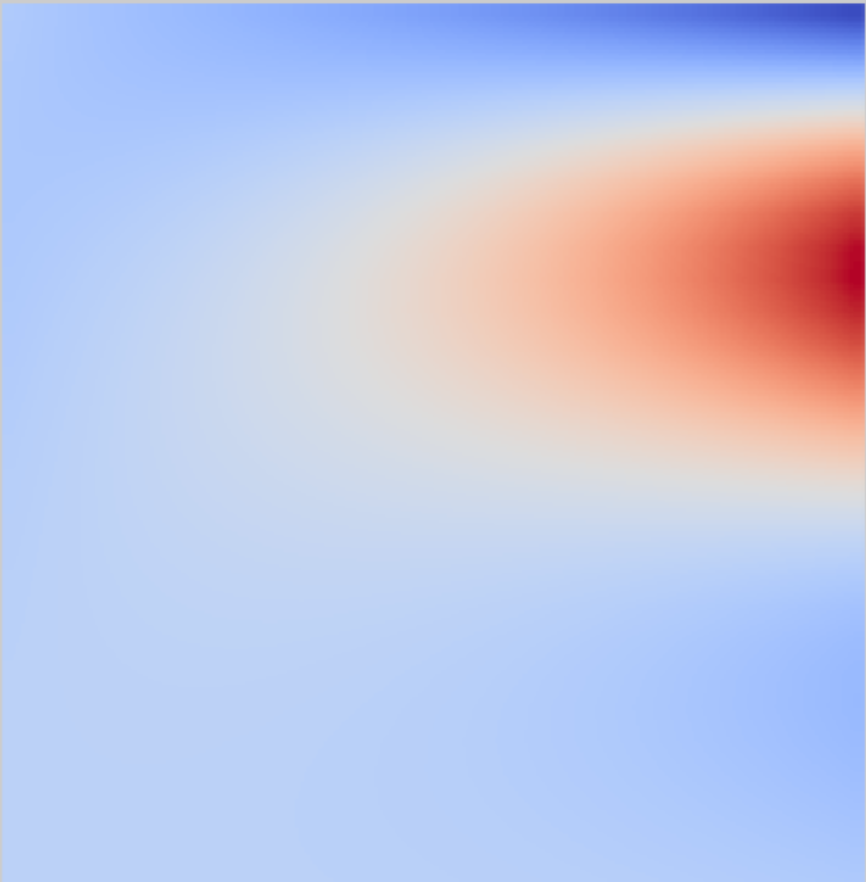
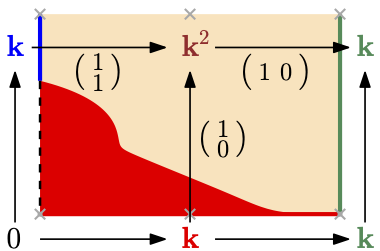
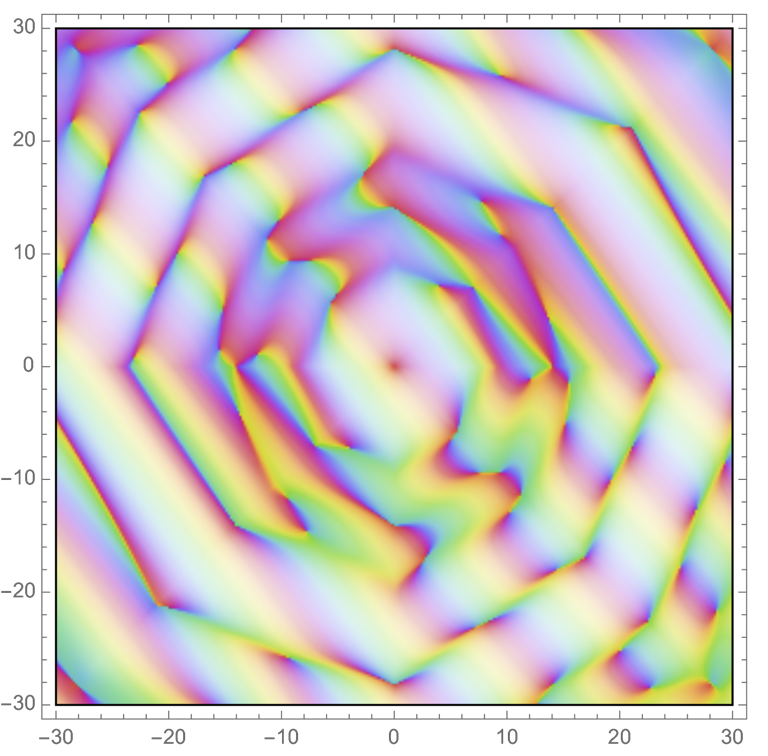
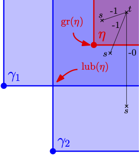
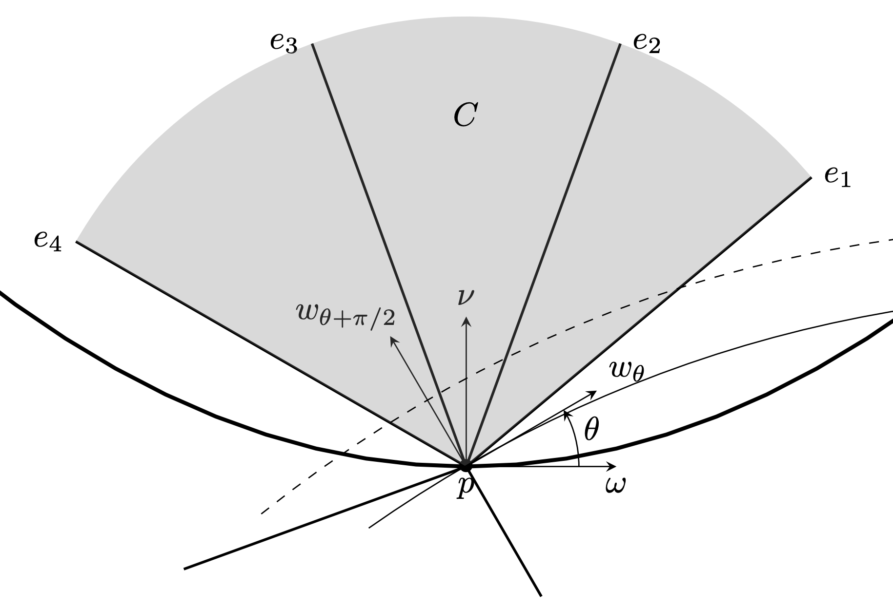
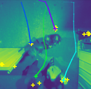

Vadim Lebovici
Preprints
|  |
Euler characteristic tools for topological data analysis
O. Hacquard, V. L. arXiv preprint, 2023 [arXiv] |
Publications
|  |
Local characterizations for decomposability of 2-parameter persistence modules
M. B. Botnan, V. L., S. Oudot Algebras and Representation Theory, 2023 [journal] [arXiv] |
|  |
Hybrid transforms of constructible functions
V. L. Foundations of Computational Mathematics, 2022 [journal] [arXiv] |
|  |
On rectangle-decomposable 2-parameter persistence modules
M. B. Botnan, V. L., S. Oudot Discrete and Computational Geometry, 2022 initially accepted in: 36th International Symposium on Computational Geometry (SoCG 2020) [journal] [arXiv] |
|  |
Reconstruction of piecewise constant functions from x-ray data
V. L. Inverse Problems, 2019 [journal] [arXiv] |
Distinctions
|  |
Challenge Maths-Entreprise (1st place)
Reconstruction of trajectories from video detections. E. Lasalle, V. L., O. Hacquard [site] [code] |
Supervisions
-
Hugo Passe’s Bachelor internship (ENS Lyon), co-supervised with S. Oudot
Implementation of a Python and C++ software that computes topological and hybrid transforms on embedded cubical complexes.
[code]
Invited talks
-
Microlocal sheaf theory and the work of Pierre Schapira, 2023, Faculty of Sciences, Lisbon, Portugal.
Hybrid transforms of constructible functions
[site] -
Interactions between representation theory and topological data analysis (workshop), 2022, Center for Advanced Study, Oslo, Norway.
[site] [talk]
Contributed talks and posters
-
Applied Topology seminar, 2023, Mathematical Institute, Oxford University, United-Kingdom.
Euler characteristic in topological persistence
[site] -
DataShape meeting, 2023, Porquerolles, France.
Euler characteristic tools for topological data analysis
[site] -
Geomerix team's seminar, 2023, Inria Saclay, France.
Euler characteristic tools for topological data analysis
site] -
ANR Mistic days, 2023, Université Paris-Cité, France.
Hybrid transforms for topological data analysis
[site] -
Persistence, Sheaves, and Homotopy Theory Seminar, 2023, online.
Hybrid transforms of constructible functions
[site] -
Monthly seminar of the Geometry and Algebra team, 2023, Ecole Normale Supérieure, Paris.
Euler calculus
[site] -
Annual meeting of maths department, 2022, Ecole Normale Supérieure, Paris.
Topological integral transforms and data analysis -
ATMCS 10, 2022, University of Oxford, England.
Hybrid transforms of constructible functions
[site] [talk] -
Young Researchers Forum, CGWeek2022, Berlin, Germany.
Euler-Fourier transform of constructible functions
[site] [booklet] [talk] -
Computational Geometry Days, 2022, online.
Hybrid transforms of constructible functions
[site] (talk) -
DataShape meeting, 2022, Porquerolles, France.
Integral transforms in persistence
[site] (talk) -
Applied Topology Seminar, 2022, EPFL, Lausanne, Switzerland.
Hybrid transforms of constructible functions with applications to multi-parameter persistent magnitude
[site] [talk] -
DataShape weekly seminar, 2021, Orsay, France.
Hybrid transforms of constructible functions
[site] (talk) 20 20 20 20 20 -
Symposium on Computational Geometry, CGWeek2020, ETH, Zürich, Switzerland.
On rectangle-decomposable persistence bimodules
[site] (talk) -
Inverse problems, PDE and geometry conference, 2018, University of Jyväskylä, Finland.
Reconstruction of piecewise constant functions from x-ray data
[site] [poster]
Reading groups co-organization
- Topological persistence in geometry and analysis - Polterovitch et al., 2023, Mathematical Institute, Oxford, United Kingdom
- Sheaves on Manifolds - Kashiwara, Schapira, 2021, ENS Paris, France
- Random Fields and Geometry - Adler, Taylor, 2020, ENS Paris, France